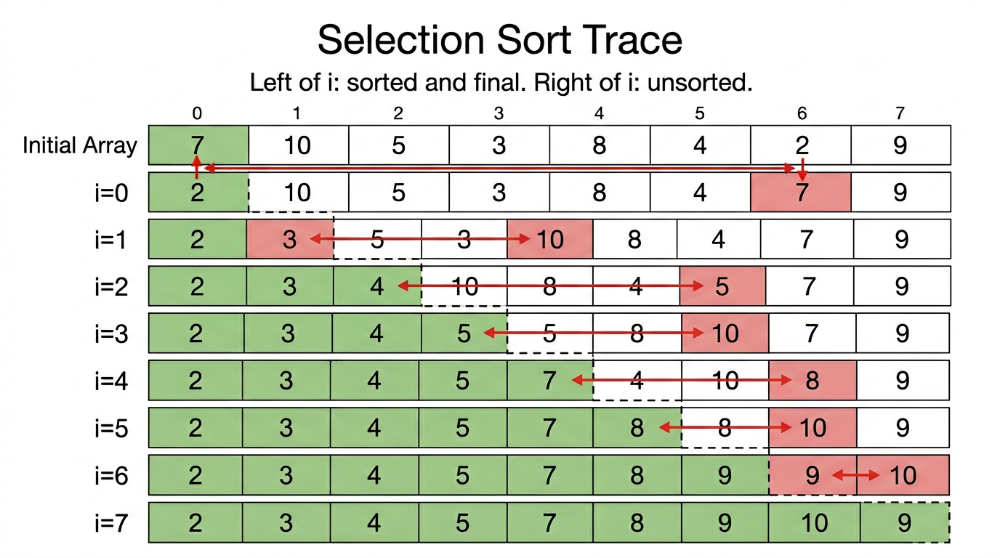

Elementary Sorts — COMP0005 Algorithms¶
Lecture-style notes: selection sort, insertion sort, and how they sit in the wider sorting landscape.
1. COMPLETE TOPIC SUMMARIES¶
1.1 The sorting problem¶
Goal. Given an array a of N integers (or, more generally, comparable keys), reorder the elements so they appear in ascending order.
- Input: array
a[0..N-1] - Output: the same multiset of values, permuted so
a[0] ≤ a[1] ≤ … ≤ a[N-1]
We usually count comparisons (reads that decide order) and exchanges or writes (depending on the model) as the main cost drivers. For these elementary sorts, time is Θ(N²) in the worst case; the interest is in constants, best-case behaviour, stability, and what comes next (divide-and-conquer, heaps, lower bounds).
1.2 Selection sort¶
Key idea. Scan left to right. At outer index i, find the index min of the smallest value among a[i..N-1], then swap a[i] with a[min]. After step i, position i holds the i-th smallest element.
Loop invariants (after completing iteration i, before incrementing):
- Left of i is fixed and sorted:
a[0..i-1]is sorted, and those elements will never move again in this algorithm. - Nothing to the right is smaller than anything to the left: every element in
a[i..N-1]is ≥ every element ina[0..i-1].
How we maintain them: each pass picks the minimum of the unsorted suffix and exchanges it into position i, so the new left segment grows by one sorted element and still dominates the right segment.
Pseudocode:

{kind=link}
Complexity (comparisons and exchanges)
- Comparisons: the inner loop runs for \(j = i+1,\ldots,N-1\), so for each i we do \((N-1-i)\) comparisons. Total: [ \sum_{i=0}^{N-1} (N-1-i) = (N-1) + (N-2) + \cdots + 0 = \frac{N(N-1)}{2} \sim \frac{N^2}{2}. ]
- Exchanges: exactly one swap per outer iteration (even if
min == i), so N exchanges in the pseudocode above. (Some variants skip the swap whenmin == i, giving at most N−1 non-trivial swaps.)
Asymptotics: the number of comparisons depends only on N, not on whether the input is already sorted. So:
Hence best = average = worst for comparison count: often summarised as Ω(N²) = Θ(N²) = O(N²) for selection sort’s comparison cost.
Stability: the standard version is not stable — swapping non-adjacent equal keys can reorder equal elements relative to their original order.
1.3 Insertion sort¶
Key idea. Scan left to right. At index i, treat a[0..i-1] as already sorted; insert a[i] into its correct place by swapping it left past larger neighbours (or shifting, in an implementation variant).
Outer loop invariants (when the outer index is i):
- Left segment sorted:
a[0..i-1]is in ascending order. - Right segment unseen:
a[i..N-1]has not yet been positioned.
Inner loop invariant (typical formulation while j walks left from i):
a[0..i] contains the same multiset as before this outer step, a[0..j-1] and a[j+1..i] are sorted, and a[j] is the element being bubbled into place — so the only possible disorder is around a[j].
Pseudocode (with early exit when the correct position is found):
Optimisation: break when a[j] ≥ a[j-1] — the element has reached its sorted slot; no need to compare further left.
Complexity
| Regime | Rough compares | Rough exchanges | Intuition |
|---|---|---|---|
| Best (already sorted) | N − 1 | 0 | Inner loop exits immediately each time. |
| Worst (reverse sorted) | ~½N² | ~½N² | Each a[i] moves all the way to the front. |
| Average (random order, informal) | ~¼N² | ~¼N² | Each element moves halfway on average. |
Asymptotics: worst-case time Θ(N²); best-case Ω(N) comparisons when the array is already sorted (with the break). Upper bound remains O(N²).
Stability: implemented with adjacent swaps only, and breaking when a[j] ≥ a[j-1] (not < on equality), insertion sort can be stable — equal keys do not cross if we never swap when equal.
1.4 Side-by-side comparison (selection vs insertion)¶
| Selection sort | Insertion sort | |
|---|---|---|
| Best-case compares | ~N²/2 (always scans full suffix) | ~N (sorted input + early break) |
| Average compares | ~N²/2 | ~N²/4 (informal) |
| Worst-case compares | ~N²/2 | ~N²/2 |
| Input sensitivity | None (comparison count fixed for given N) | High (nearly sorted → fast) |
| Typical stability | Unstable (long-distance swap) | Stable (if implemented as above) |
2. EXAM-STYLE QUESTIONS (WITH MODEL ANSWERS)¶
Q1 — Loop invariants¶
Question. State two loop invariants for selection sort after completing the outer iteration with index i. Explain in one sentence each how the exchange step preserves them.
Model answer.
a[0..i]is sorted and contains the i+1 smallest elements of the array. The exchange places the minimum ofa[i..N-1]at index i, extending the sorted prefix by the next smallest key.- Every element in
a[i+1..N-1]is ≥ every element ina[0..i]. The newa[i]is the minimum of the old suffix, so nothing remaining on the right is smaller than this new boundary element; previously fixed left entries were already ≤ all old suffix values.
Q2 — Exact comparison count¶
Question. Prove that selection sort performs exactly \(\frac{N(N-1)}{2}\) key comparisons for any input of length N.
Model answer. For each i from 0 to N−1, the inner loop runs j = i+1, …, N−1, which is (N−1−i) iterations, each doing one comparison. Total: [ \sum_{i=0}^{N-1} (N-1-i) = \sum_{k=0}^{N-1} k = \frac{N(N-1)}{2}. ] No branch skips comparisons, so the count is input-independent.
Q3 — Best vs worst for insertion sort¶
Question. Give best-case and worst-case time behaviour for insertion sort (using the version with break), in Θ notation for comparisons, and describe inputs that achieve each.
Model answer.
- Best case Θ(N): array already sorted. For each i, one compare
a[i]vsa[i−1]succeeds (a[i] ≥ a[i−1]), then break — N−1 compares total. - Worst case Θ(N²): array in strictly decreasing order. Each new element must swap to the front: inner loop runs i times for each i, giving \(\sum_{i=1}^{N-1} i = \frac{N(N-1)}{2}\) compares (and the same order of swaps).
Q4 — Stability¶
Question. Explain why the standard selection sort is generally unstable, while insertion sort with adjacent swaps and break when a[j] ≥ a[j-1] is stable.
Model answer. Stability requires that equal keys keep their relative order. Selection sort may swap an element from the right over an equal element on the left, reversing their relative order. Insertion sort only moves the current key left while it is strictly smaller than its neighbour; equal neighbours trigger break, so equal keys never cross — original order among equals is preserved.
Q5 — When would you still use insertion sort?¶
Question. Arrays A (size N, random) and B (size N, almost sorted, few inversions). Which of selection vs insertion sort is more appropriate for B, and why?
Model answer. Insertion sort for B: its cost tracks how far keys are from their sorted positions; few inversions ⇒ few inner iterations ⇒ near-linear behaviour in practice. Selection sort still does Θ(N²) compares regardless, so it wastes work on B. For random A, both are Θ(N²); neither scales, but insertion sort’s constants can still differ — the exam point is input sensitivity vs insensitivity.
3. MUST-KNOW KEY POINTS¶
- Sorting problem: permute a so keys are non-decreasing; analyse comparisons, moves/swaps, and best/average/worst cases.
- Selection sort: repeatedly select minimum of suffix; ~N²/2 compares always; Θ(N²) time driven by compares; N swaps in the given pseudocode; not stable in the usual form.
- Insertion sort: insert each element into sorted prefix; Θ(N) best (sorted), Θ(N²) worst; break avoids redundant work; stable with ≥ test on inner loop.
- Know the table: selection insensitive to input; insertion sensitive — good for small or nearly sorted data.
- Stability matters when sorting records by one field after sorting by another (tie-breaking).
- These are baseline Θ(N²) methods; later algorithms (mergesort, heapsort, quicksort) aim for Θ(N log N) typical or worst-case behaviour and connect to decision trees and lower bounds for comparison sorts (Ω(N log N) in general).
4. HIGH-PRIORITY TOPICS¶
🔴 Must know¶
- Formal sorting goal and what stability means.
- Selection sort mechanics, two invariants, and why comparisons are always \(\frac{N(N-1)}{2}\).
- Insertion sort mechanics, inner/outer invariants,
breakoptimisation, best Θ(N) vs worst Θ(N²). - The comparison table (best / average / worst compare behaviour).
- Stability argument for both (swap distance vs adjacent swaps + break).
🟡 Important¶
- Exchange counts (selection: O(N) swaps; insertion: O(N²) worst case).
- Nearly sorted inputs and inversions as intuition for insertion sort’s performance.
- Why selection sort minimises writes among simple methods (useful idea) but still Θ(N²) compares.
🟢 Useful but lower priority¶
- Tiny implementation variants (e.g. shift instead of swap in insertion sort — fewer assignments).
- Adaptive sorting as a vocabulary word for insertion-like behaviour.
- Online property: insertion sort can sort items as they arrive (left prefix always sorted).
5. TOPIC INTERCONNECTIONS & BIGGER PICTURE¶
flowchart LR
subgraph elementary["Elementary Θ(N²)"]
SEL[Selection sort]
INS[Insertion sort]
end
subgraph advanced["Typical next topics"]
MERGE[Mergesort]
QUICK[Quicksort]
HEAP[Heapsort]
LB[Comparison lower bound Ω(N log N)]
end
SEL --> LB
INS --> MERGE
INS --> QUICK
elementary --> advanced
- Warm-up for analysis: both algorithms train invariant reasoning, summation for nested loops, and case analysis (best vs worst).
- Insertion sort as a subroutine: small subarrays in quicksort or mergesort are often sorted with insertion sort (low overhead, good when n is tiny).
- Stability previews mergesort (stable, Θ(N log N)) vs typical quicksort (often unstable unless engineered).
- Input sensitivity contrasts with heap- or merge- style guarantees; selection’s fixed compare count is the extreme of not adaptive.
- Later modules tie comparison sorting to binary decision trees: N! leaves ⇒ Ω(N log N) comparisons in the worst case for any comparison-based sort — so Θ(N²) elementary sorts are not optimal for large N, but remain conceptual and practical building blocks.
6. EXAM STRATEGY TIPS¶
- Define invariants before complexity: examiners reward precise statements (“after iteration i, …”) linked to why the update preserves them.
- Selection sort: always derive \(\sum_{i=0}^{N-1}(N-1-i)\); mention input independence explicitly.
- Insertion sort: always separate best (sorted + break) from worst (reverse); sketch the arithmetic series \(\sum_{i=1}^{N-1} i\).
- Stability: use a mini example with equal keys (e.g.
A₁, A₂with same value) if short on time — one clear counterexample beats vague prose. - Big-O vs Θ vs Ω: selection sort comparisons are Θ(N²) for all inputs; insertion sort best comparisons are Θ(N) but worst Θ(N²) — say O(N²) for worst-case guarantee, Ω(N) for best-case lower bound when asked carefully.
- Link outward: one sentence on “small n / nearly sorted → insertion” and “comparison lower bound → need better algorithms” signals course-level understanding.
Course: COMP0005 Algorithms. Aligns with standard treatments of selection and insertion sort; check your term’s official notation for big-O conventions and whether “exchange” vs “assignment” is emphasised in marking schemes.